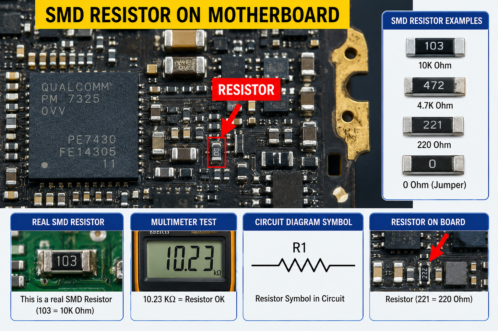

📘 Chapter 2.1 - Resistor

Figure 1: SMD Resistor on Mobile Motherboard
📷 Image Description
यह Mobile Motherboard पर लगा हुआ एक SMD (Surface Mount Device) Resistor है।
इसका कार्य Circuit में Current को नियंत्रित करना और Voltage को Divide करना होता है।
मोबाइल के Charging, CPU, Display, Camera और Audio सेक्शन में ऐसे Resistor पाए जाते हैं।
📚 Types of Resistors
1. Fixed Resistor
इसकी Resistance Value हमेशा एक जैसी रहती है। मोबाइल मदरबोर्ड में सबसे ज़्यादा इसी प्रकार के Resistor का उपयोग होता है।
2. Variable Resistor (Potentiometer)
इसकी Resistance को बदला जा सकता है। मोबाइल मदरबोर्ड में इसका उपयोग बहुत कम होता है।
3. SMD Resistor
SMD (Surface Mount Device) Resistor बहुत छोटा होता है और सीधे PCB पर लगाया जाता है। आज के लगभग सभी Smartphones में इसी प्रकार के Resistor लगाए जाते हैं।
Resistor क्या है?
Resistor (प्रतिरोधक) एक Passive Electronic Component है जो Electric Current के Flow को नियंत्रित (Control) करता है।
Unit
Ohm (Ω)
मोबाइल में उपयोग
- Current Control
- Voltage Division
- LED Protection
- Signal Control
- CPU एवं IC Protection
खराब होने के लक्षण
- फोन ON नहीं होना
- Charging Problem
- Display Problem
- Backlight Problem
- Network Problem
Repair Tips
- हमेशा उसी Value का Resistor लगाएँ।
- PCB Track को Damage न करें।
- Quality SMD Resistor का उपयोग करें।
⚙️ Working Principle
जब किसी Circuit में Voltage लगाया जाता है, तो Electric Current बहना शुरू होता है।
Resistor इस Current को सीमित (Limit) करता है ताकि CPU, IC और अन्य Components सुरक्षित रहें।
🔍 Resistor की पहचान कैसे करें?
- यह Motherboard पर छोटे काले या भूरे रंग का SMD Component होता है।
- इसके ऊपर अक्सर 100, 221, 472 जैसे नंबर लिखे होते हैं।
- Circuit Diagram में इसे R1, R2, R15 जैसे नाम से दिखाया जाता है।
📱 Motherboard में कहाँ होता है?
Resistor लगभग हर Section में मिलता है, जैसे:
- Charging Section
- Display Section
- CPU Section
- Camera Section
- Network Section
- Power Section
💡 महत्वपूर्ण बात
यदि Resistor Open हो जाए तो Circuit टूट जाता है।
यदि Short हो जाए तो अधिक Current बह सकता है और IC खराब हो सकती है।
🎨 Resistor Color Code
Through Hole Resistor में रंगों (Color Bands) से उसकी Value पता चलती है।
लेकिन Mobile Motherboard में ज़्यादातर SMD Resistor उपयोग होते हैं, जिन पर नंबर या Code लिखा होता है।
📏 Multimeter से Test कैसे करें?
- Multimeter को Resistance (Ω) Mode में रखें।
- Resistor के दोनों सिरों पर Probe लगाएँ।
- अगर Value सही आए तो Resistor ठीक है।
- अगर OL या Infinite दिखे तो Resistor Open है।
- अगर 0Ω दिखे (जहाँ ऐसा नहीं होना चाहिए) तो Short हो सकता है।
🛠️ Practical Tips
- Resistor बदलते समय उसी Value का नया Resistor लगाएँ।
- Soldering करते समय PCB Track को नुकसान न पहुँचाएँ।
- Unknown Value होने पर Schematic या Boardview की मदद लें।
📌 याद रखने योग्य बातें
- Resistor Current को नियंत्रित करता है।
- इसकी Unit Ohm (Ω) होती है।
- मोबाइल के लगभग हर सेक्शन में Resistor लगे होते हैं।
- गलत Value का Resistor लगाने से Circuit सही काम नहीं करेगा।
⬅ Back to Courses